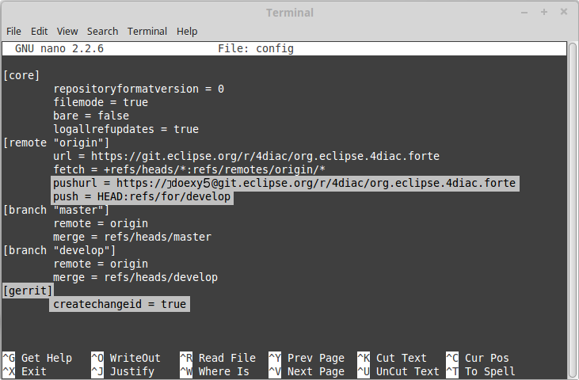
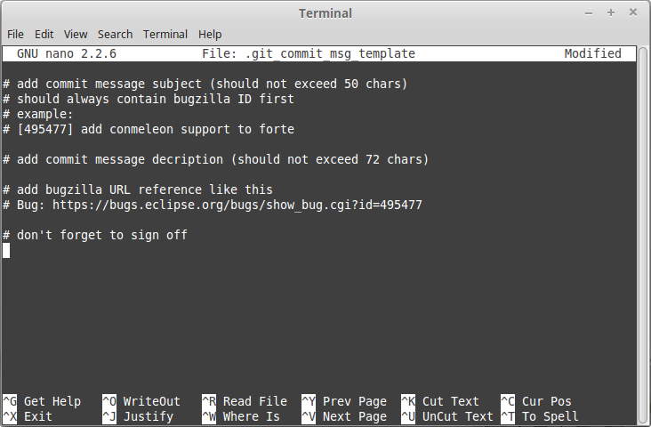

Change the initial value of temp variable The initial value of the temp variable was changed to 1 instead of zero because of weather conditions
Contributing to Eclipse 4diac
The projects 4diac IDE and 4diac FORTE are stored as a Git repository in the Eclipse platform. It’s open source, so you can download the project and you can even change things and improve it. But of course, it’s not that simple, otherwise changes would be added without any control and could mess up the code. If you wish to report a bug, see the section Bug report.
Git repository
If you don’t know what Git is, don’t worry, we have all been there. Basically, Git is a distributed system that is used to control various versions of anything, but mostly of software code. The code is stored in a so-called repository which contains all files related to the software. After changing the code, instead of saving new files (fileV1, fileV2, fileFinalVersion, fileThisIsReallyTheFinalVersion, fileThisIsReallyTheFinalVersion2) in a new folder, you just "commit" the change and the changes are saved in the repository. To see older versions of the software, you go to the specific commit. The good thing about Git is the word "distributed" in its definition (I bet you didn’t notice it). There’s not only one repository, but anyone who wishes to contribute to the repository, copies the whole content of the repository to his/her computer and works there, changes there and commits there. Then, the user pushes to the repository where he/she copied from.
This is only the basic principle of Git, but it should give an idea of how it works. The step-by-step tutorial following below helps to set up Git for your first contributions. Plenty of information online helps to learn more about Git. Instead of starting from zero, I would recommend having a look at https://git-scm.com/ where you can download everything necessary to start contributing to any Git project. The documentation book about Git provides a good overview. Although the book is very long, you’ll only need Chapters 1 and 2 to understand how Git works, and Chapter 3 to understand branches.
But I should warn you, young padawan, learning Git is hard. It’s a very powerful tool, but it takes time to understand it. Simply, read the basics and follow the step-to-step guide. It is not necessary to try to understand everything before jumping to contributions. The best teacher is practice, so use 4diac FORTE or 4diac IDE as your example for practicing. You can’t break anything. Git is bullet-proof.
Github
You know how Git works, and have maybe already used it. But now, a new player is in the game: Github. What is it? When someone, a programmer with the best intentions, wants to contribute to 4diac FORTE code, s/he clones the Github repository, makes changes, commits, and then pushes the changes to the repository in the Eclipse Foundation. But of course, the change doesn’t go directly to the repository. First, it has to be accepted by the people in charge of 4diac FORTE or 4diac IDE. Therefore, the contributors create a pull request on Github. Github automatically checks legal requirements (copyright headers!), and then notifies the people responsible of Eclipse 4diac that some new change has arrived. They then visit Github, see the new pull request, and can accept or deny it. Most of the time you will get comments to improve your code. Easy, right?
But to better understand Github, it’s better to work with it. Create a Github account on https://www.github.com. We’ll go step-by-step toward pushing code to Github in order to contribute to Eclipse 4diac.
Help 4diac IDE and 4diac FORTE - NOW!
As said before, we’ll learn to contribute to 4diac IDE and 4diac FORTE step-by-step. However, if you want to contribute, you’ll need to sign some legal documents online. If you don’t wish to sign them, you can still get the code of 4diac IDE or 4diac FORTE and play with it.
Create an Eclipse account
First of all, you should create an Eclipse account. All commits that are created by Eclipse accounts without signed ECA will be rejected automatically. If you don’t want to contribute, but just want to download the code and play around, skip to the next step.
To create the Eclipse account, simply go to https://www.eclipse.org/ and click "Create Account" on the top-right of the page. Then, just fill in the information to create an account. The email address indicated during account registration should also be used later in Git.
Submit bug reports
If you notice an issue related to Eclipse 4diac, you should report an issue on the Github issue tracker. This will help the project - even if you have no idea how to fix it! For 4diac IDE, follow: https://github.com/eclipse-4diac/4diac-ide/issues - for 4diac FORTE, follow: https://github.com/eclipse-4diac/4diac-forte/issues You can report issues and suggestions for 4diac IDE, 4diac FORTE, the webpage, etc. after logging into your (new) Github account. The title of the bug or feature request should be concise and descriptive. Further details are then added in the description field. Provide all information required to understand and possibly also reproduce a bug. Add your operating system if there is an issue with installation or graphical user interfaces - this may help to reproduce your bug. Don’t hesitate to also report minor issues.
Sign the ECA
The next step is to sign the ECA (Eclipse Contributor Agreement). This is mandatory in order to contribute to the projects. Go to the ECA page to read it and learn more about it. The ECA protects for example copyrights. Basically, when you sign it, you declare that you have full rights of every contributed change, which helps protecting intellectual property, including your own. If your contribution is part of your work at some company, you should talk first with your superior and the legal department to fully understand how to approach this.
The signing is done online after logging in to your account and selecting the "Eclipse Contributor Agreement". You need to check boxes and complete a textbox with "I AGREE". There’s no tangible outcome. Eclipse stores your information together with the version of the ECA that you signed. You can print the ECA, but you won’t get a certificate to print that says that you signed it. Your account will show that you have signed the ECA and there’s a tool in Eclipse validating whether an account has signed it.
Use EGit to contribute: Preparations
The first example uses Eclipse and all the Git work will be done using EGit, normally installed automatically together with the Eclipse IDE. If you think GUI is for weaks and a real programmer should use command line, you can follow the instructions given below. Nevertheless, users without command line experience should stick to Eclipse.
-
Get all required software
The first thing to do is to get all the software. For 4diac FORTE download Eclipse for C and install it. The installation of the toolchain is described xref:../installation/installation.adoc#ownIDE[here]. If you already have an Eclipse IDE but it's not configured for C, you don’t need to download another Eclipse, but only the C++ plugin. See a tutorial here. To install Eclipse IDE for developing 4diac IDE use this instruction. EGit should be installed automatically with your Eclipse, otherwise follow the steps here to install it.
-
Configure EGit
The first thing to do in EGit is to configure the user settings. The main items are the name and email address. This information is attached to your commits. To do that, just follow the simple steps in Section 4.2 of the same link as above. In particular, open Window → Preferences → Team → Git → Configuration in Eclipse. Click "Add Entry…" to open a dialog box for a key-value pair. As a key enter
emailand as value enter the email address of your Eclipse account. Click "Add" and add another entry. The second entry consists of the keynameand your full name as value. As you created the Eclipse account and signed the ECA in the previous step, you must use the same email address. -
Download 4diac FORTE or 4diac IDE repository
In Eclipse, go to File → Import…→ Git → Projects from Git. Click Next and then select Clone URI. Next, paste https://github.com/eclipse-4diac/4diac-forte.git or https://github.com/eclipse-4diac/4diac-ide.git in the URI field and then Next. Eclipse will connect to the repository and retrieve all its branches. Select all and click Next. The branches represent various development stages. For small updates/fixes to the current version, you can use the branch with the latest version number. Select the destination folder of the repository in your local machine and click Next. Wait while the repository is being downloaded. Click Next until the assistant is finished.
-
(Optional) Look around and move between branches
Now you have the newest 4diac FORTE or 4diac IDE code. After downloading the code of a project, look around first. Check the folders, read the documentation and readme files. Try to understand the folders and hierarchies.
Right-click on a project in the Eclipse package explorer and select Team. There you find all possible commands for EGit. Team → Show in History will show you all the commits in the current branch. Normally, master is the main branch. If 4diac FORTE has another branch, and you want to work with it, you’ll have to create a local branch that serves as reference of the original branch. That is, the Eclipse repository has a master branch (seen as origin/master), and for example a develop branch (seen as origin/develop). But you, locally, have only a master branch (seen as master). This local master is a reference to the origin/master and everything you change on it, will be then pushed to the origin/master. But if you want to work on the origin/develop branch, you’ll need to create a local branch that references it. Details on branches can be found in the book mentioned above (chapter 3).
Right-click on the project → Team → Switch To → Other…. There you’ll see the local and remote branches. Select the remote branch you want to work on, for example origin/develop, and click Checkout. You’ll get a message saying that you can watch the remote branch, or you can create a new branch locally to work on it. Click on "Checkout as New Local Branch" and then select a name for the local branch. Usually, the name of the original branch is copied, therefore, we’ll call it develop (without the part "origin/") and click finish. Now you can switch between the branches, and the changes in each one will be reflected in the corresponding origin.
The projects follows the workflow shown here. Basically, the master branch is used to release versions and the development of new stuff. You should always branch out from develop to work on something new.
Create contributions with Eclipse and EGit
After you downloaded the current code, you can start creating contributions.
-
Find a bug to work on
In order to contribute, you need to first find a bug to work on. Larger changes should be related to a bug recorded in the issue tracker. You can look into the code and find something wrong or you can go to the list of bugs on Github and see the ones that refer to the 4diac IDE or 4diac FORTE project. If you find an error, or even missing documentation, you should report the bug. In order to learn how to contribute you may want to edit some documentation. Maybe you find a typo or you’d like to add some details. Bug fixes are a metric that shows how the software development progresses. But be aware that when reporting a bug, it should have a clear way of fixing it. For a reported bug such as "Missing documentation", it is unclear when the bugfix is complete. Therefore, state for example which documentation is missing.
-
Make changes and prepare to commit
Now you actually change the code. Open the files you want to change and edit them. Try to change less then 1000 lines in one commit in order to keep individual commits small. Larger edits can be split to several commits.
Open the Git Staging View in Eclipse by going to Window → Show View → Other… → Git → Git Staging. In the Unstaged Changes you see all the files that were changed. Right-click on them and then Add to index. The selected files will be moved to Staged Changes.
-
Commit the changes
Committing changes is a very important step. The changes are first committed locally. The commit message is essential for pushing to Github, you can find example messages below. In Github, the commit is first verified to ensure that everything is fine and the changes are then accepted. The commit message is created in the Git Staging View and consists of two parts: the subject and the body. The parts are separated by an empty line.
-
The subject must contain a short explanation of what the commit contains. Try to keep it shorter than 50 characters and, for better readability, start the message with a capital letter. Don’t use a period at the end of the subject.
-
The body contains all the explanation of what was done. Use it to explain what and why, but not how.
-
If CommitOne is rejected (erroneous code, missing information, etc.), you must revise the commit and amend (overwrite) the CommitOne. This generates CommitTwo. (You could also delete CommitOne completely, and create a new commit as CommitTwo). Remember that CommitTwo is a completely new commit. CommitTwo must have the Change-Id that Gerrit generated for CommitOne (Go to the Gerrit webpage, find the change of CommitOne and you’ll see its Change-Id). When you push CommitTwo, it won’t create a new entry in Gerrit. Instead, CommitTwo will appear below CommitOne on the same page. Now CommitTwo is waiting to be accepted.
+ Example for CommitOne:
+
+ With the message done, click commit.
+ Example for CommitTwo:
+
Change the initial value of temp variable The initial value of the temp variable was changed to 2 instead of zero because of weather conditions
+ With the message done, click commit. . Push the commit
+
In the History View you can see the new commit you have just added.
You can access this view by changing the tab from "Git Staging" to "History".
So far, the commit is only stored locally, and no one else knows about it.
It’s time to push it to the repository in Eclipse.
Right-click on your last commit → Push commit…. A dialog opens.
With the configurations shown, you are trying to push to the develop branch of the Gerrit called refs/heads/develop.
The push confirmation notifies that a new branch is being created.
Don’t worry about that, and click Finish.
Enter the password again, and then the push should succeed.
If anything fails, the error appears in the log.
Option 2: Git on command line
Use Git on the command line instead of EGit (this one is for the reckless, the knights of the keyboard and especially those afraid of mice).
The following instructions apply to Debian-based Linux systems such as LinuxMint or Ubuntu. It is assumed that you have already created your Eclipse account and signed the ECA as described above. Also the same rules for creating a bug report and working on the 4diac FORTE or 4diac IDE code apply. Of course, you can decide yourself which editor you want to use for coding. There are a lot of possibilities out there: VI, Emacs and many more. For code compilation and linking on a Linux system, the GNU compiler suite usually is the best choice. But the details on that won’t be addressed here.
-
Check and install Git command line tools
If you are unsure whether the Git command line tools are already installed on your Linux box, you can enter the following command on Debian based distributions (e.g., LinuxMint, Ubuntu):
johndoe@linuxmint ~/$ dpkg --get-selections | grep git
If Git tools are already installed, you should get a reply such as:
git install git-core install git-gui install git-man install git-review install gitk install
If you don’t see the output above, you’ll need to install the Git tools with the following command:
johndoe@linuxmint ~/$ sudo apt-get update && sudo apt-get install git
-
Clone 4diac FORTE ord 4diac IDE repository to a directory of your choice
First, create a directory in your own home directory and change to it. In my example, this is
⁄home⁄johndoe⁄develop⁄repos, but you can also choose another.johndoe@linuxmint ~/$ mkdir -p develop/repos johndoe@linuxmint ~/$ cd develop/repos
Now it’s time to clone the sources. In the following example the repository URL for 4diac FORTE is used. For 4diac IDE use https://github.com/eclipse-4diac/4diac-ide.git instead.
johndoe@linuxmint ~/develop/repos$ git clone https://github.com/eclipse-4diac/4diac-forte.git Cloning into 'org.eclipse.4diac.forte'... remote: Counting objects: 1, done remote: Finding sources: 100% (1/1) Receiving objects: 100% (2283/2283), 1.27 MiB | 458.00 KiB/s, done. remote: Total 2283 (delta 0), reused 2283 (delta 0) Resolving deltas: 100% (1445/1445), done. Checking connectivity... done.
After cloning, you can have a look at the branches of the repository, but first you’ll have to change to the new 4diac FORTE source directory created automatically.
johndoe@linuxmint ~/develop/repos$ cd org.eclipse.4diac.forte johndoe@linuxmint ~/develop/repos/org.eclipse.4diac.forte $ git branch -a * master remotes/origin/1.8.x remotes/origin/HEAD → origin/master remotes/origin/OPC_UA remotes/origin/develop remotes/origin/master
The "*" indicates the current active branch. Now switch to the "develop" branch, because this is the one, where the commits are supposed to go.
johndoe@linuxmint ~/develop/repos/org.eclipse.4diac.forte $ git checkout develop Branch develop set up to track remote branch develop from origin. Switched to a new branch 'develop'
-
Configure your Git installation to work with Gerrit code review
You should have already created your Eclipse account and Gerrit login, following the description above. Let’s assume that your email account is
john.doe@example.comand the login for Gerrit isjdoexy5. We’ll set this in the git configuration first.johndoe@linuxmint ~/develop/repos/org.eclipse.4diac.forte $ git config --global user.email "john.doe@example.com" johndoe@linuxmint ~/develop/repos/org.eclipse.4diac.forte $ git config --global user.name "jdoexy5"
Please note that
git config --globalsettings are generally stored within a user-specific configuration file. This file is named.gitconfigand is stored in your own home directory and not in the 4diac FORTE repository. We’ll now create an SSH public key which you need to upload to your Gerrit account later on.johndoe@linuxmint ~/develop/repos/org.eclipse.4diac.forte $ cd ~/.ssh johndoe@linuxmint ~/.ssh $ ssh-keygen -t rsa -C "john.doe@example.com" Generating public/private rsa key pair. Enter file in which to save the key (/home/johndoe/.ssh/id_rsa): Enter passphrase (empty for no passphrase): Enter same passphrase again: Your identification has been saved in /home/johndoe/.ssh/id_rsa. Your public key has been saved in /home/johndoe/.ssh/id_rsa.pub. The key fingerprint is: 4d:c7:4f:8f:71:07:89:cb:c9:dc:e5:ad:54:77:9a:64 john.doe@example.com
You can just accept the default key file location by hitting the return key. The Eclipse foundation strongly recommends to use a passphrase for additional security. Now copy the newly created public SSH key to your Gerrit account at eclipse.org. Display the contents of the public key file with the following command:
johndoe@linuxmint ~/.ssh $ cat id_rsa.pub
Copy everything displayed into your clipboard from the start (including ssh-rsa) to the end (including
john.doe@example.com). Now login to your gerit account at eclipse.org, click on the small arrow next to your user name displayed in the top-right corner and choose "Settings". In the menu on the left, choose "SSH Public Keys" and click on "Add key…". Now paste everything from the clipboard into the text field and click "Add". Your public key should appear in the list now. We’ll check now, whether Gerrit is accepting your key properly. Let’s do a small ssh login test.johndoe@linuxmint ~/.ssh $ ssh -p 29418 jdoexy5@git.eclipse.org The authenticity of host '[git.eclipse.org]:29418 ([198.41.30.196]:29418)' can't be established. RSA key fingerprint is 1a:b6:dc:be:0e:1f:ab:01:70:aa:43:82:4d:54:51:37. Are you sure you want to continue connecting (yes/no)? yes Warning: Permanently added '[git.eclipse.org]:29418,[198.41.30.196]:29418' (RSA) to the list of known hosts. **** Welcome to Gerrit Code Review **** Hi John, you have successfully connected over SSH. Unfortunately, interactive shells are disabled. To clone a hosted Git repository, use: git clone ssh://jdoexy5@git.eclipse.org:29418/REPOSITORY_NAME.git Connection to git.eclipse.org closed.
You’ll have to configure the Gerrit Push URL within your Git configuration. Change to the hidden Git directory within the 4diac FORTE repository and edit the file named "config"
johndoe@linuxmint ~/.ssh $ cd .. johndoe@linuxmint ~/ $ cd develop/repos/org.eclipse.4diac.forte/.git johndoe@linuxmint ~/develop/repos/org.eclipse.4diac.forte/.git $ nano config
The following screenshot indicates the parts you need to add or change. Save and exit afterwards.

-
Create your own commit message template (optional)
You can create a commit message template file, which will be used everytime you do a new commit. You can add helpful comments, so that you don’t forget important contents of the message or even add text, which should be part of every commit message. It’s just up to you. Change to your home directory and create a new file called
.git_commit_msg_templatewith your favorite text editor. Here I used nano for convenience.johndoe@linuxmint ~/develop/repos/org.eclipse.4diac.forte/.git $ cd /home/johndoe johndoe@linuxmint ~/ $ nano .git_commit_msg_template
The following screenshot shows some example content. See above for more details of the message guide

-
Do your first command line commit
A new commit should always be in relation to a bug in Bugzilla as already mentioned above. A bug can also add new functionality to 4diac FORTE. A single commit should not contain more than 1000 lines of code (yes, you are right, this was already mentioned above, but you can never emphasize this too often). A good approach to check whether something was changed in your local 4diac FORTE sources and needs to be committed is the git status command. You should change to your local 4diac FORTE Git repository first.
johndoe@linuxmint ~/develop/repos/org.eclipse.4diac.forte $ git status On branch develop Your branch is up-to-date with 'origin/develop'. Untracked files: (use "git add file..." to include in what will be committed) src/modules/conmeleon_c1/ nothing added to commit but untracked files present (use "git add" to track)
In the example above, I only added an empty directory, which is now recognized by Git as untracked. If you want to add some new files, just copy them to your local 4diac FORTE repository or edit existing files. Git will recognize the changes and you’ll see the files with the "git status" command. To be able to commit anything, the respective files need to be added first. In this way, the files will be moved to the so called staging area. So flex your fingers and add properly.
johndoe@linuxmint ~/develop/repos/org.eclipse.4diac.forte $ git add src/modules/conmeleon_c1/util johndoe@linuxmint ~/develop/repos/org.eclipse.4diac.forte $ git status On branch develop Your branch is up-to-date with 'origin/develop'. Changes to be committed: (use "git reset HEAD file..." to unstage) new file: src/modules/conmeleon_c1/util/fileres.cpp new file: src/modules/conmeleon_c1/util/fileres.h new file: src/modules/conmeleon_c1/util/uncopyable.h Untracked files: (use "git add file..." to include in what will be committed) src/modules/conmeleon_c1/CMakeLists.txt src/modules/conmeleon_c1/gpio/ src/modules/conmeleon_c1/processinterface.cpp src/modules/conmeleon_c1/processinterface.h src/modules/conmeleon_c1/spi/
Now we do the commit itself. Don’t forget the -s option for automatic sign-off which is required by the org.eclipse.4diac.forte project and to follow the message guide if you didn’t do it already as a template. After the git commit command the default editor will be opened with your commit message template and you have to enter the message information (Bugzilla ID, what was changed and why and the URL to the bugzilla entry).
johndoe@linuxmint ~/develop/repos/org.eclipse.4diac.forte $ git commit -s [develop 3a8de79] [495477] Add conmeleon support to forte 3 files changed, 272 insertions(+) create mode 100644 src/modules/conmeleon_c1/util/fileres.cpp create mode 100644 src/modules/conmeleon_c1/util/fileres.h create mode 100644 src/modules/conmeleon_c1/util/uncopyable.h
So far so good. This was not really a big deal, was it? The next step is pushing to Gerrit code review and then your new code will be scrutinized by the never sleeping eyes of the project code reviewer.
-
Push to Gerrit
This is not difficult, if you followed the steps above. You are just a single command away from finishing.
johndoe@linuxmint ~/develop/repos/org.eclipse.4diac.forte $ git push origin HEAD:refs/for/develop Password for 'https://jdoexy5@git.eclipse.org': Counting objects: 38, done. Delta compression using up to 2 threads. Compressing objects: 100% (8/8), done. Writing objects: 100% (9/9), 3.84 KiB | 0 bytes/s, done. Total 9 (delta 3), reused 0 (delta 0) remote: Resolving deltas: 100% (3/3) remote: Processing changes: new: 1, refs: 1, done remote: ---------- remote: Reviewing commit: 3a8de79f remote: Authored by: jdoexy5 (john.doe@example.com) remote: remote: The author is not a committer on the project. remote: The author has a current Contributor License Agreement (CLA) on file. remote: The author has "signed-off" on the contribution. remote: remote: This commit passes Eclipse validation. remote: remote: New Changes: remote: https://git.eclipse.org/r/74832 [495477] Add conmeleon support to forte remote: To https://jdoexy5@git.eclipse.org/r/4diac/org.eclipse.4diac.forte * [new branch] HEAD → refs/for/develop
You did it, good job! Now it’s the reviewer’s turn and you’ll see his or her comments in the Gerrit code review webpage.
Things to keep in mind for contributions:
-
When creating new files for the project, add the copyright terms at the beginning. Following the year of modification, add the name. Additionally, add your name below "Contributors", together with a short description of your contribution. Example code:
{year} {owner}[ and others] This program and the accompanying materials are made available under the terms of the Eclipse Public License 2.0 which is available at http://www.eclipse.org/legal/epl-2.0. SPDX-License-Identifier: EPL-2.0 Contributors: {name} - initial API and implementation -
Always contribute to a bug.
-
Put the bug number between brackets in the subject of the commit message, and the link to the bug in the footer.
-
Don’t forget to sign the commit.
-
Don’t be afraid of contributing code.
-
Use the forums in case of doubt.
-
Find more info here.
Where to go from here?
Back to Development index:
If you want to go back to the Start Here page, we leave you here a fast access:
Or Go to top